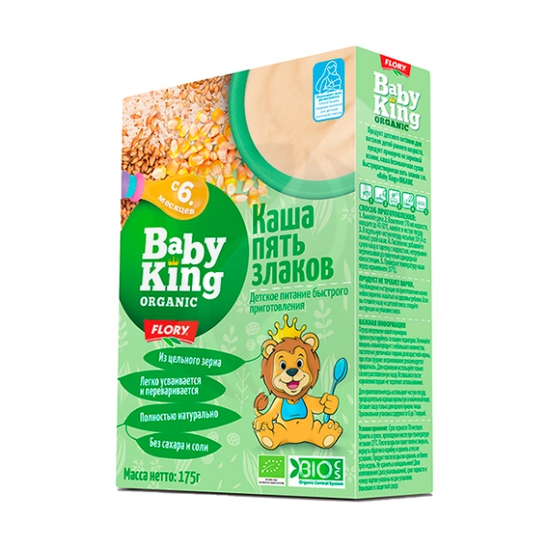
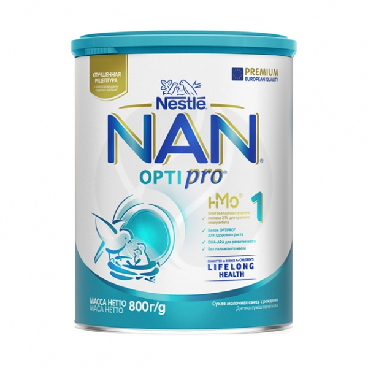

Название
Состав
Цена
Внешний вид
Baby King ORGANIC каша 5 злаков безмолочная (6+мес), 175г
Органическая пшеничная мука, органическая кукурузная мука, органическая ржаная мука, органическая ячменная мука, органическая рисовая мука, витамин В1.
219

Nestle NAN 1 Optipro сухая молочная смесь (с рождения), 800г
Сыворотка молочная деминерализованная, обезжиренное молоко, растительные масла (подсолнечное высокоолеиновое, кокосовое, соевое, масло из Мортиереллы Альпины), лактоза, рыбий жир, кальция нитрат, гидроксид калия, цитрат калия, цитрат калия, минералы (сульфат железа, сульфат цинка, сульфат меди), витаминно-минеральный премикс (L-аскорбат натрия (С), DL-альфа-токоферол ацетат (Е), никотинамид (РР), кальция D- пантотенат (В5), тиамин мононитрат (В1), рибофлавин (В2), ретинола ацетат (А), пиридоксин гидрохлорид (В6), сульфат марганца, йодид калия, фолиевая кислота (В9), селенат натрия, филлохинон (К),D3 холекальциферол (Д), Д-биотин (В7), цианкобаламин (В12), инозит, таурин) хлорид магния, олигосахариды 2"FL, эмульгатор соевый лецитин, хлорид калия, регулятор кислотности лимонная кислота, L-фенилаланин, фосфат натрия, культура бифидобактерий лактис (не менее 1х10^6 КОЕ/г), хлорид натрия, гидроксид кальция, нуклеотиды, L-гистидин, L-карнитин, сывороточный белок.
1139
